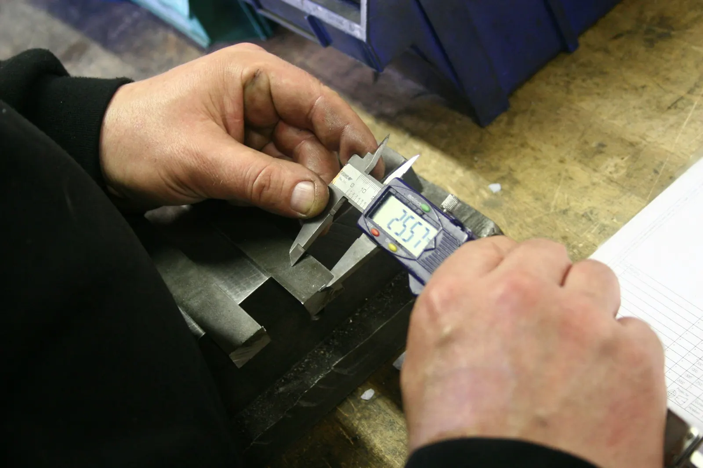

Strojový park
Jedenáct CNC strojů, šest svařovacích pracovišť a klimatizovaná měrovna. Pracujeme ve dvou směnách, pětiosé centrum s paletami obrábí i v noci.
Vejde se váš díl?
Zadejte rozměry polotovaru. Pod formulářem uvidíte, na kterých strojích ho obrobíme, a v tabulce se stroje označí.
Seznam strojů
| Stroj | Pracovní rozsah | Vybavení | Ks | Rok |
|---|---|---|---|---|
| DMG MORI DMU 65 monoBLOCK5osé frézování | 735 × 650 × 560 mm | Heidenhain TNC 640, sonda Renishaw | 2 | 2019, 2022 |
| Hermle C 42 U5osé frézování | 800 × 800 × 550 mm | paletový zásobník na 12 palet, provoz bez obsluhy | 1 | 2023 |
| Kovosvit MAS MCV 12703osé frézování | 1 270 × 610 × 720 mm | 4. osa, otočný stůl | 3 | 2011–2017 |
| Mazak QUICK TURN 250MYsoustružení | Ø 380 × 1 000 mm | osa Y, poháněné nástroje, podavač tyčí do Ø 65 mm | 2 | 2018, 2021 |
| Kovosvit MAS SP 430 SYsoustružení | Ø 430 × 1 100 mm | protivřeteno, osa Y | 2 | 2016 |
| Studer S33broušení na kulato | Ø 350 × 1 000 mm | vnější i vnitřní broušení | 1 | 2020 |
| Fronius TPS 400isvařování MIG/MAG | do 2 500 kg | pulzní svařování, polohovadla do 2,5 t | 4 | 2015–2021 |
| Fronius MagicWave 230isvařování TIG | do 800 kg | nerez a hliník | 2 | 2021 |
| Zeiss CONTURA 10/12/63D měření | 1 000 × 1 200 × 600 mm | MPE_E 1,8 + L/300 µm, měrovna 20 ± 1 °C | 1 | 2023 |

Měrovna
Rozměry kontrolujeme v klimatizované místnosti při 20 °C. Teplota rozhoduje: ocelový díl dlouhý 100 mm se při ohřátí o 5 °C prodlouží zhruba o 6 µm, a to je víc než třetina tolerance H6.
- 3D měřicí stroj
- Zeiss CONTURA 10/12/6
- Přesnost
- MPE_E 1,8 + L/300 µm
- Teplota
- 20 ± 1 °C
- Drsnoměr
- Mitutoyo SJ-410
- Kontrola
- první kus každé série, dál podle kontrolního plánu